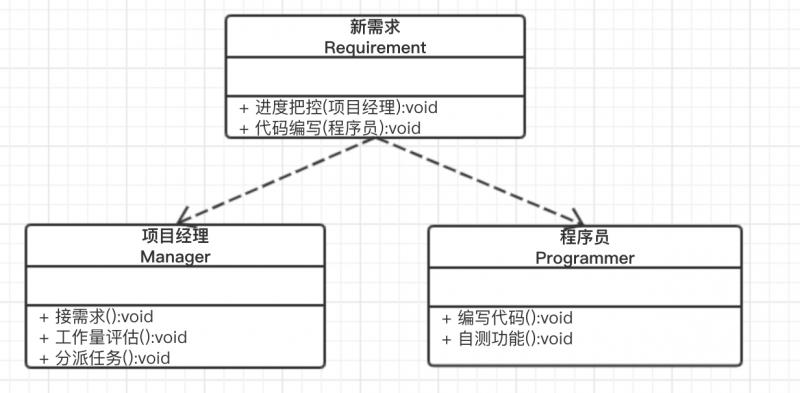
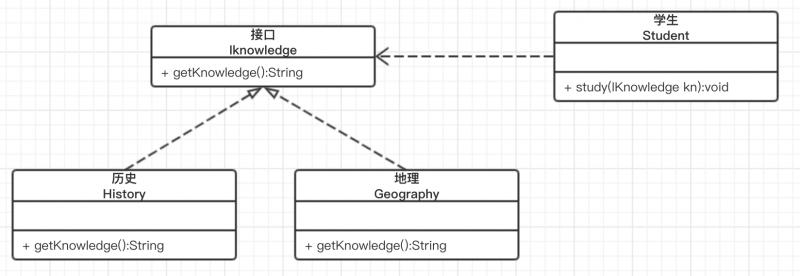

我们平时编写代码时，很少有人为了刻意迎合软件设计原则而编写。其实，有时候是你用到了其中的某个或多个设计原则，而不自知而已。也有可能是有的人压根就不知道设计原则是什么。
不过，没关系，为了搞明白既抽象又玄幻的六大准则，我总结了一句话来概括每一种设计原则所体现的主要思想。
里氏替换原则是指继承时不要破坏父类原有的功能；依赖倒置原则是指要面向接口编程；开闭原则是指对扩展是开放的，对修改是关闭的；职责单一原则是指实现类的职责要单一；接口隔离原则是指设计的接口要尽量简单，专一；迪米特法则是指要降低类之间的耦合度。
下面一一介绍六大类设计原则，看完之后，你会对上边的总结有更深的理解。
一、里氏替换原则
里氏替换原则，乍一看名字，让人摸不着头脑。其实，这是一位姓里的女士提出来的，因此用她的姓氏命名。里氏替换原则，通俗来讲，就是指子类继承父类时，可以扩展父类的功能，但是不要修改父类原有的功能。什么意思呢，举个例子。
//父类
public class Calculate {
public int cal(int a,int b){
return a + b;
}
}
//子类
public class Calculate2 extends Calculate {
public int cal(int a,int b){
return a - b;
}
}
//测试
public class TestCal {
public static void main(String[] args) {
Calculate2 cal2 = new Calculate2();
int res = cal2.cal(1, 1);
System.out.println("1+1="+res); // 1+1 = 0
}
}子类继承了父类之后，想实现新功能，却没有扩展新方法，而是重写了父类的cal方法，因此导致结果 1+1=0. 这就违反了里氏替换原则。
应该把子类Calculate2修改为，添加一个新方法cal2来实现相减功能
public class Calculate2 extends Calculate {
public int cal2(int a, int b){
return a - b;
}
}
public class TestCal {
public static void main(String[] args) {
Calculate2 cal2 = new Calculate2();
int res = cal2.cal2(1, 1);
System.out.println("1-1="+res); // 1-1=0
}
}有心的人可能会发现，里氏替换原则规定子类不能重写父类的方法。这不是和面向对象中的三大特征之一“多态”冲突吗，多态实现的一个重要前提就是子类继承父类并重写父类的方法啊。
其实，刚开始学习里氏替换原则，我也产生了这样的疑惑。后来查了很多资料，才明白，子类不应该去重写父类已经实现的方法（非抽象方法），而是去实现父类的抽象方法。也就是说，尽量要基于抽象类和接口的继承，而不是基于可实例化的父类继承。关于这一点的解释，可以看这篇文章，我感觉总结的挺不错的：https://www.jianshu.com/p/e6a7bbde8844?utm_campaign
二、单一职责原则
简单来说，就是要控制类的粒度大小，降低类的复杂度，一个类只负责一项职责。
例如，在研发一个产品新功能时。需要项目经理接需求，评估工作量，然后分发任务给程序员。程序员，根据需求编写代码，然后自测。各司其职，才能保证项目稳定向前推进。其类图如下

另外，单一职责原则也适用于方法，一个方法只做一件事。
三、依赖倒置原则
依赖倒置原则的定义为：高层模块不应该依赖低层模块，二者都应该依赖其抽象；抽象不应该依赖细节，细节应该依赖抽象。其实，就是在说要面向抽象，面向接口编程。
举个栗子，如果一个学生去学习历史知识，只需要把历史书给他就可以了
public class History {
public String getKnowledge(){
return "历史知识";
}
}
public class Student {
public void study(History history){
System.out.println("学习" + history.getKnowledge());
}
}
public class Test {
public static void main(String[] args) {
Student stu = new Student();
stu.study(new History()); //学习历史知识
}
}但是，如果他需要学习地理知识呢，我们需要把History改为Geography，然后修改study方法的参数类型为Geography
public class Geography {
public String getKnowledge(){
return "地理知识";
}
}
public class Student {
public void study(Geography geography){
System.out.println("学习" + geography.getKnowledge());
}
}
//学习地理知识虽然，这样实现也是可以的，但是通用性太差，类之间的耦合度太高了。设想，如果该学生又要学习数学知识呢，语文呢，英语呢，是不是每次都要修改study方法。这样的设计不符合依赖倒置原则，应该把各个学科知识抽象出来，定义一个接口IKnowledge，然后每个学科去实现这个接口，而study方法的参数传一个固定类型IKnowledge就可以了。
public interface IKnowledge {
String getKnowledge();
}
public class History implements IKnowledge{
public String getKnowledge(){
return "历史知识";
}
}
public class Geography implements IKnowledge{
public String getKnowledge(){
return "地理知识";
}
}
public class Student {
public void study(IKnowledge iKnowledge){
System.out.println("学习" + iKnowledge.getKnowledge());
}
}
public class Test {
public static void main(String[] args) {
Student stu = new Student();
stu.study(new History()); //学习历史知识
stu.study(new Geography()); //学习地理知识
}
}这样的话，如果需要再学习英语知识，只需要定义一个English类，去实现IKnowledge接口就可以了。 这就是依赖倒置原则的面向接口编程。
它们之间的类图关系如下

四、接口隔离原则
接口隔离原则的定义：客户端不应该依赖它不需要的接口；一个类对另一个类的依赖应该建立在最小的接口上。
什么意思呢，就是说设计接口的时候，不要把一大堆需要实现的抽象方法都定义到同一个接口中，应该根据不同的功能，来拆分成不同的接口。我们知道，实现类去实现接口的时候，需要实现所有的抽象方法。如果接口中有某些不需要的方法，也需要实现，但是方法体却是空的，这样完全没有意义。
例如，我定义一个Animal的接口，用狮子去实现接口
public interface Animal {
void eat();
void fly();
void run();
}
public class Lion implements Animal {
@Override
public void eat() {
System.out.println("狮子吃肉");
}
@Override
public void fly() {
}
@Override
public void run() {
System.out.println("狮子奔跑");
}
}很明显，狮子是不会飞的，fly方法的方法体是空的。这样设计，不符合接口隔离原则。因此，我们把接口进行拆分，拆分为Animal，IFly，IRun三个接口，让狮子选择性实现。
public interface Animal {
void eat();
}
public interface IFly {
void fly();
}
public interface IRun {
void run();
}
public class Lion implements Animal,IRun {
@Override
public void eat() {
System.out.println("狮子吃肉");
}
@Override
public void run() {
System.out.println("狮子奔跑");
}
}
// 狮子只需要实现吃的方法和奔跑的方法就可以了，不需要实现IFly接口。可以发现，接口隔离原则和职责单一原则非常之相似，但其实是不同的。职责单一原则主要是约束类，针对的是具体的实现，强调类职责的单一。而接口隔离原则主要是约束接口的，注重的是高层的抽象和对接口依赖的隔离。
另外，需要注意，接口设计的过细也不太好，会增大系统的复杂度。想象一下，你为了实现某些功能，却需要实现十几个接口的场景是多崩溃吧。因此需要适度地进行接口拆分。
五、迪米特法则
迪米特法则定义：一个对象应该对其他对象保持最少的了解。什么意思呢，就是说要尽量降低类之间的耦合度，提高类的独立性，这样当一个类修改的时候，对其他类的影响也会降到最低。
通俗点讲，就是一个类对它依赖的类知道的越少越好。对于被依赖的类来说，不管内部实现多复杂，只需给其他类暴露一个可以调用的公共方法。
举个简单的例子。当公司老板需要下发一个任务时，不会直接把每个员工都叫到一起，给每个人分配具体的任务。而是先召集各部门经理给他们发布任务，然后部门经理再给下边员工分派任务。老板只需要监督部门经理即可，不需要关心部门经理给每个员工分配的任务具体是什么。
用代码可以这样表示
public class Employee {
public void doTask(){
System.out.println("员工执行任务");
}
}
public class DeptManager {
public void task(){
System.out.println("部门领导发布任务");
Employee employee = new Employee();
employee.doTask();
}
}
public class Boss {
private DeptManager deptMgr;
public void setDeptMgr(DeptManager mgr){
this.deptMgr = mgr;
}
public void task(){
System.out.println("老板发布任务");
deptMgr.task();
}
}
public class TestD {
public static void main(String[] args) {
Boss boss = new Boss();
boss.setDeptMgr(new DeptManager());
boss.task();
}
}
//老板发布任务
//部门领导发布任务
//员工执行任务这样，老板跟具体的每个员工就没有任何直接联系，降低了耦合度。
可以看到，其实部门经理在这其中充当了中介的作用，用于建立老板和员工之间的联系。需要注意，要适度的使用中介，如果中介太多，就会导致系统复杂度太高，通讯的效率降低。就如同一个公司，部门越多，级别层级越多，越不容易管理，沟通成本增加，执行任务的效率下降。因此，需要合理设计中介类。
六、开闭原则
开闭原则定义：对扩展是开放的，对修改是关闭的。
其实，这句话就体现了封装，继承和多态的思想。一个实体类，如果已经实现了原有的功能，就不应该再对其进行修改，需要的话应该对其进行功能扩展。这句话听起来是不是跟里氏替换原则特别像。其实，开闭原则更像是对其他几个原则的总结，最终要达到的目的就是用抽象构建高层模块，用实现扩展具体的细节。
里氏替换原则和依赖倒置原则告诉你应该对类和方法进行抽象。单一职责和接口隔离告诉你应该怎样做抽象才合理，迪米特法则告诉你具体实现怎样做才能做到高内聚，低耦合。
其实，六大设计原则就规定了一些规则，它告诉你按照这样做更好，但是如果你非要不遵守规则，也不是不行，代码照样可以跑，只不过是增加了代码出问题的概率，健壮性也不好，可维护性不高。这就像我们生活中的很多规则，如过马路，需要看红绿灯。但是，你非要不看，硬闯红灯，也没人能把你怎样，不过是增加了你被撞的概率而已。所以，遵守规则，能最大限度降低我们的损失。